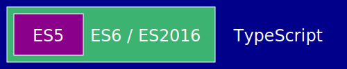

Typescript
The Better JavaScript?
Christian Köberl / github.com/derkoe / @derkoeChristian Köberl
Software Architect / Developer
Develops webapps since 1999
Powering Mobility Business for a Smart World
26 countries, 160 products, 450 employees
More than 1M vehicles sold per year
Datacenter 1500 hosts, 60 TB RAM, 1500 TB disk
Why TypeScript?
●
Code Completion
aka Intellisense
Refactoring
Car → Vehicle
Backend APIs
→ TS
»How I Learned to Stop Worrying & Trust the Compiler«
Felix Rieseberg, TypeScript at Slack
Using Future ECMAScript Features
async/await
Decorators (@)
ES6 Classes
class Person {
constructor(firstName, lastName) {
this.firstName = firstName;
this.lastName = lastName;
}
}
let person = new Person(1, 2);
person.mama = 'Mia';
person = Math.sqrt(person);Types?
TypeScript
- Statically-typed superset of ES5 and ES2015/16
- Developed by Anders Hejlsberg / Microsoft 2012
Typescript vs ES6 vs ES5
export class Person {
private dateOfBirth?: Date;
constructor(private firstName: string, private lastName: string) {
}
toString() {
return `${this.firstName} ${this.lastName} (${this.dateOfBirth})`;
}
}
Type Declarations
let a: number;
function toLowerCase(a: string|null) {
return a ? a.toLowerCase() : null;
}
type AorB = 'A'|'B';
const x: AorB = 'A';
type BiFunc = (a: number, b: number) => number;
Interfaces
interface Person {
firstName: string;
lastName: string;
dateOfBirth?: Date;
}
class Employee implements Person {
constructor(public firstName: string, public lastName: string) {
}
}Type Compatibility
Structural Typing aka Duck Typing
const p = {
firstName: 'Chris',
lastName: 'Kö'
};
const person: Person = p;
person.dateOfBirth = new Date();
Type Inference
const name = 'Christian'; // no type needed
// even no types for complex stuff
document
.getElementById('id')
.addEventListener('click',
ev => alert(`${ev.clientX}, ${ev.clientY}`));
Generic Types
class Stack<T> {
private items: T[] = [];
public push(item: T) {
this.items.push(item);
}
public pop(): T {
return this.items.pop();
}
}
const stack = new Stack<string>();
stack.push("a");
const a = stack.pop(); // a is a string
Integrating JavaScript
- TypeScript Declaration Files -
d.ts
- Just types, declarations and interfaces
- DefinitelyType / Typings
Modules and Namespaces
- Modules correspond to ES6 modules
exportandimport - Namespaces are translated to IIFEs module pattern
Advanced Topics
Decorators
@Component({a = '1'}) // <<-- decorator
class MyClass {
@measure // <<-- decorator
public doSomething() {
// ...
}
}- Access control, Validation
- Logging, Profiling
- Frameworks (e.g. Angular)
Creating Decorators
function measure(target: any, propertyKey: string,
descriptor: PropertyDescriptor) {
const originalFunction = descriptor.value;
descriptor.value = function (...args: any[]) {
const start = Date.now();
originalFunction.apply(target, args);
console.log(`${propertyKey} with params "${args}"
took ${Date.now() - start}ms`);
}
}
async/await
function loadUserName(userId) {
const url = `https://user-api/user/${userId}`;
return fetch(url)
.then(response => response.json())
.then(user => user.name);
}async function loadUserName2(userId: string) {
const url = `https://user-api/user/${userId}`;
const response = await fetch(url);
const user = await response.json();
return user.name;
}since Typescript 2.3 for target ES5
Similar Tools
Flow is a static type checker for JavaScript.
A transpiler from Java to TypeScript/JavaScript
elm
A delightful language for reliable webapps.
Summary
Static type checking is awesome! (especially with TypeScript)
Use ES2015 and ES.next features!
Thanks! Questions?
github.com/derkoe / @derkoePS: We are hiring!
Image Credits
- Title Christian Köberl: © Christian Köberl
- Rotating arms: Imgur
- All others © Porsche Informatik